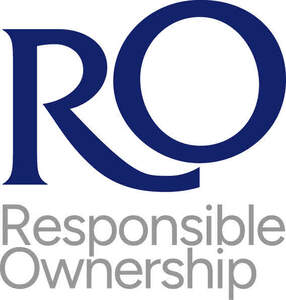
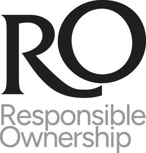

Trade Mark Journal No.2025/035 29 August 2025
UK00004251630 19 August 2025 (9,36,41)
Mark 1

Mark 2

- Class 9
- Downloadable software and downloadable computer programs in the field of investment and financial services, namely, for tracking and viewing investment information; downloadable electronic publications in the nature of books, magazines, and manuals in the field of investment and financial services; downloadable computer software applications for investment and financial services, namely, for tracking and viewing investment information.
- Class 36
- Insurance agency and brokerage; financial affairs, namely, financial information, management and analysis services; monetary affairs, namely, financial information, management and analysis services; financial services, namely, financial securities exchange services; real estate affairs, namely, real estate management of residential homes, commercial malls, and retirement communities; corporate finance services, namely, consultation in the fields of asset sales and capital structure; private equity consultant services; debt funding, namely, investment of funds for others in the nature of debt investment services; investment services, namely, asset acquisition, consultation, development and management services; capital investment, investment of funds, and trust investment services being a type of investment of funds service; investment management services; mutual fund investment, collective investment scheme services in the nature of operation and management of collective investment vehicles, and hedge fund investment services; unit trust administration services being a type of financial trust administration service; financial and investment planning and research; venture and growth capital, namely, venture capital financing; investment consultancy; management of investments in trusts, charities, companies and pension funds; financial assessment and reviewing services, namely, financial risk assessment services; financial asset management services; fund management services, namely, management of private equity funds, venture capital fund management, management of a capital investment fund; financial portfolio valuation services; financial investment research services; provision of financial information on-line from a computer database, the Internet or otherwise; consultancy, information and advice relating to the foregoing services.
- Class 41
- Providing online, non-downloadable electronic publications in the nature of books, magazines, and manuals in the field of investment and financial services; providing online non-downloadable videos featuring audio-visual display presentations in the field of investment and financial services; arranging of lecture presentations for training purposes in the field of investment and financial services; training services in the field of investment and financial services; providing online non-downloadable electronic publications in the nature of prospectuses being brochures in the field of investment and financial services; advisory, consultancy and information services relating to the foregoing services.
TowerBrook Capital Partners LP
Representative: Kilburn & Strode LLP